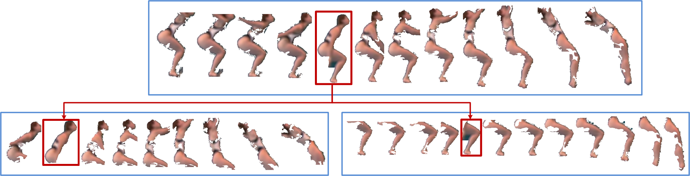
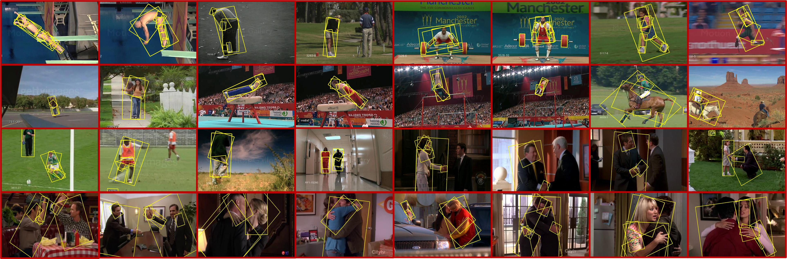
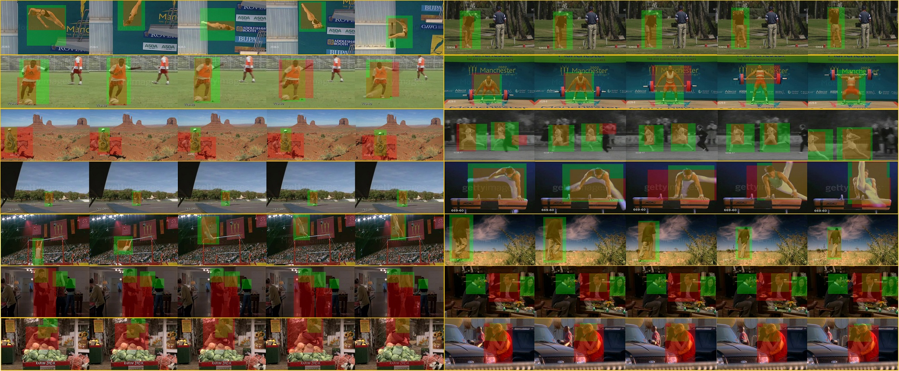

Action Recognition and Localization
|
|  |
We propose Hierarchical Space-Time Segments as a new representation for action recognition and localization. This representation has a two level hierarchy. The first level comprises the root space-time segments that may contain a human body. The second level comprises multi-grained spacetime segments that contain parts of the root. We present an unsupervised method to generate this representation from video, which extracts both static and non-static relevant space-time segments, and also preserves their hierarchical and temporal relationships. Using simple linear SVM on the resultant bag of hierarchical space-time segments representation, we attain better than, or comparable to, state-of-art action recognition performance on two challenging benchmark datasets and at the same time produce good action localization results. |
|
|
| Downloads We provide matlab code for extracting hierarchical space-time segments. Please find detail of the code in [Readme]. If you have any problems, suggestions or bug reports about this software, please contact shugaoma AT bu.edu. [Paper] [Code ] |
Users of our code are asked to cite the following publification: |
| Example Hierarchical Video Frame Segments
 |
| Action Localization Examples
 |